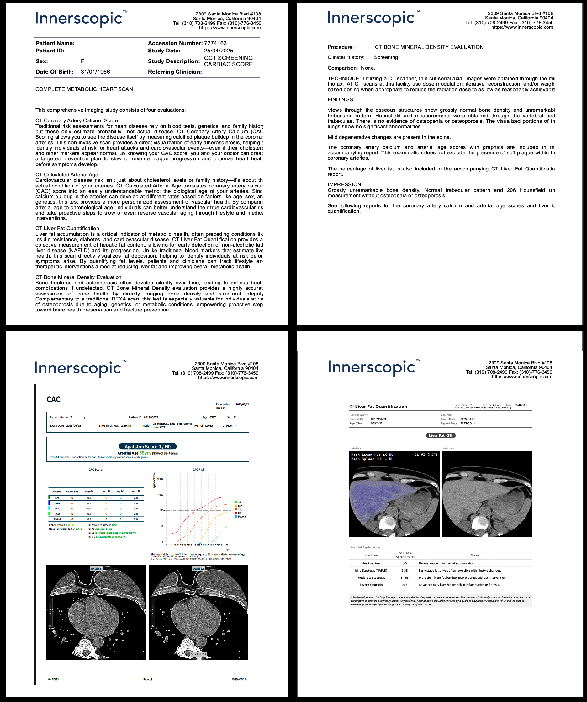
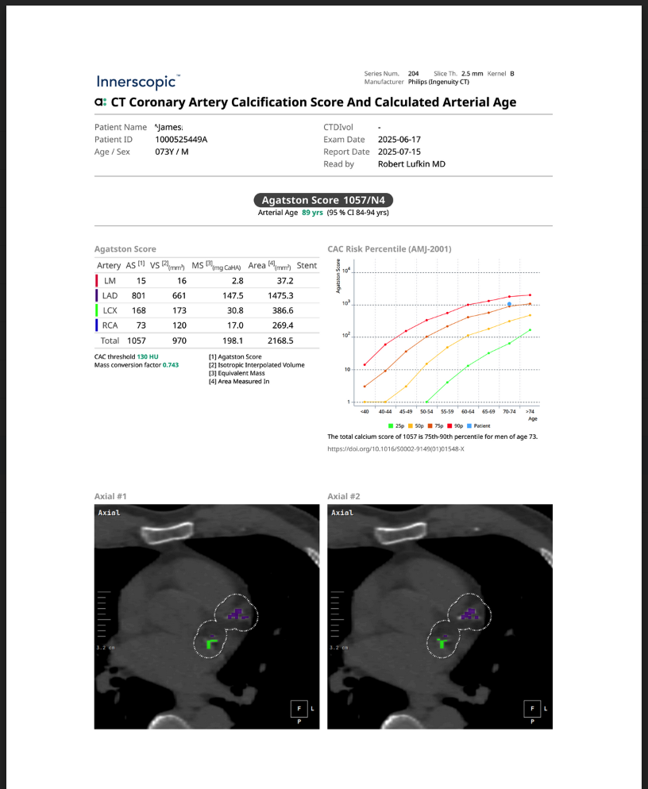
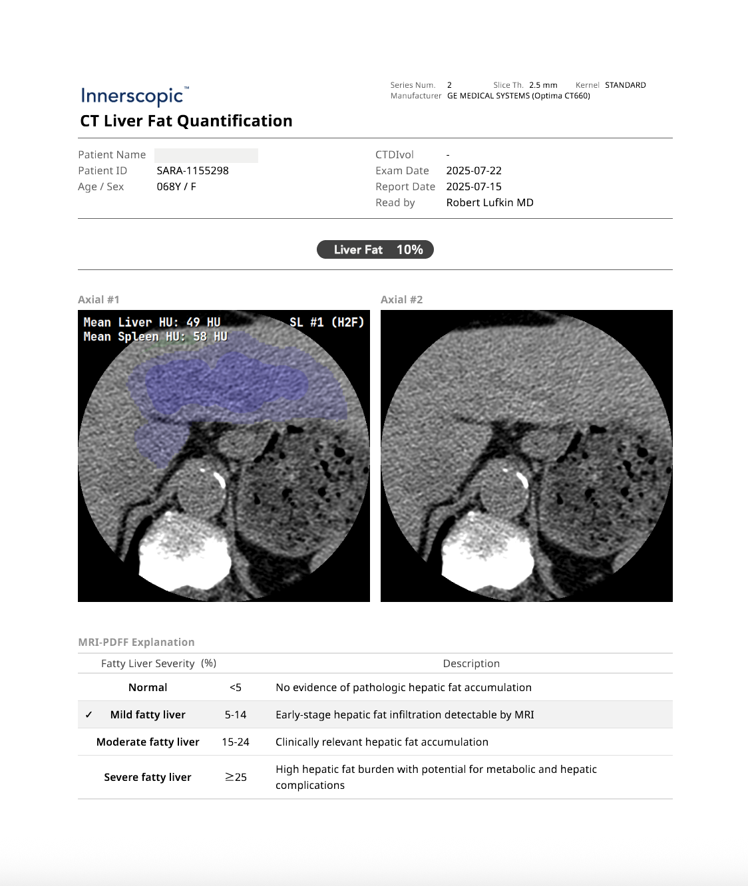

The CT Calcium Scan
(Now with Arterial Age and Liver Fat Quantification.)
ORDER NOW
Traditional risk assessments for heart disease rely on blood tests and statistical models that estimate your likelihood of developing cardiovascular problems. But these methods can miss the disease when it's already forming silently in your arteries.
CT Coronary Artery Calcium (CAC) Scoring allows you to see the disease itself. Using a low-dose, non-invasive CT scan, the CAC score directly measures calcified plaque in the coronary arteries—providing an Agatston Score that quantifies the actual burden of atherosclerosis. This is the gold standard in early heart disease detection, enabling you and your physician to make informed decisions about prevention and treatment.

Cardiovascular disease risk isn't just about cholesterol levels or blood pressure readings. Your arteries age at their own pace, influenced by genetics, lifestyle, and metabolic factors that standard tests often overlook.
CT Calculated Arterial Age translates your coronary artery calcium (CAC) score into an easily understandable metric—your arterial age. By comparing your calcium score against population-level data, we determine whether your arteries are aging faster or slower than expected for someone of your chronological age and sex. This powerful insight helps you and your healthcare provider target interventions where they matter most.
Liver fat accumulation is a critical indicator of metabolic health that often goes undetected until significant damage has occurred. Non-alcoholic fatty liver disease (NAFLD) affects an estimated 25% of the global population and is closely linked to insulin resistance, type 2 diabetes, and cardiovascular disease.
CT Liver Fat Quantification provides an objective measurement of hepatic fat content using Hounsfield Unit (HU) analysis of the liver and spleen. This precise, non-invasive measurement helps identify fatty liver disease at its earliest stages—when lifestyle changes and medical interventions can still reverse the condition and prevent progression to more serious liver damage.

Enter your zip code and we'll identify a partner imaging center within 30 minutes of your location. You'll be contacted within 96 hours to schedule your scan—no physician referral needed.
Your scan is performed by certified technicians at a partner imaging center near you. The low-dose CT scan takes just minutes and requires no injections or special preparation. Data is sent securely for processing.
Within 96 hours after your scan, you'll receive comprehensive written reports including your CAC Score, Arterial Age, and Liver Fat Quantification—all delivered directly to you with clear, actionable insights.
We guarantee service within 30 minutes of your location—or your money back.
ORDER NOWThe Complete Metabolic Heart Scan includes three comprehensive assessments: CT Coronary Artery Calcium (CAC) Scoring to measure calcified plaque in your coronary arteries, CT Calculated Arterial Age to determine whether your arteries are aging faster or slower than expected, and CT Liver Fat Quantification to measure hepatic fat content. Together, these tests provide a holistic picture of your cardiovascular and metabolic health.
The Complete Metabolic Heart Scan is recommended for adults over 30, particularly those with a family history of heart disease, elevated blood pressure, high cholesterol, diabetes, or other risk factors for cardiovascular disease. It's also valuable for health-conscious individuals who want a comprehensive baseline assessment of their heart and metabolic health.
The Complete Metabolic Heart Scan is a direct-to-consumer service and is typically not covered by insurance. This model allows us to provide faster access without the need for physician referrals or insurance pre-authorization, putting you in control of your health decisions.
A CT (Computed Tomography) scan is a non-invasive imaging technology that uses X-rays and computer processing to create detailed cross-sectional images of the body. Our scan uses a low-dose protocol specifically optimized for cardiac and abdominal imaging, minimizing radiation exposure while providing highly accurate diagnostic information.
Yes, the Complete Metabolic Heart Scan is FSA (Flexible Spending Account) eligible. You can use your pre-tax FSA funds to pay for the scan, making it a smart way to invest in your health while maximizing your benefits.
If you have already been diagnosed with coronary artery disease or have undergone bypass surgery, a CAC scan is generally not needed for the purpose of initial detection—since the disease is already known. However, consulting with your physician about your specific situation is always recommended.
The Complete Metabolic Heart Scan is generally not recommended for individuals with pacemakers or other implanted cardiac devices, as these can interfere with imaging quality and scoring accuracy. Please consult with your physician for alternative assessment options.
No. The Complete Metabolic Heart Scan is completely non-invasive and requires no injections, needles, contrast dye, or special preparation. You simply lie on the scanning table for a few minutes while the CT scanner captures the images.
Innerscopic uses proprietary protocols developed by leading medical experts to deliver the most comprehensive metabolic heart assessment available. No physician referral is needed—we put you in direct control of your health. Our nationwide network of partner imaging centers ensures convenient access, and our team provides guidance every step of the way, from scheduling to understanding your results.
2309 Santa Monica Blvd #108
Santa Monica, California 90404
310-708-2499 (voice)
310-776-3450 (fax)